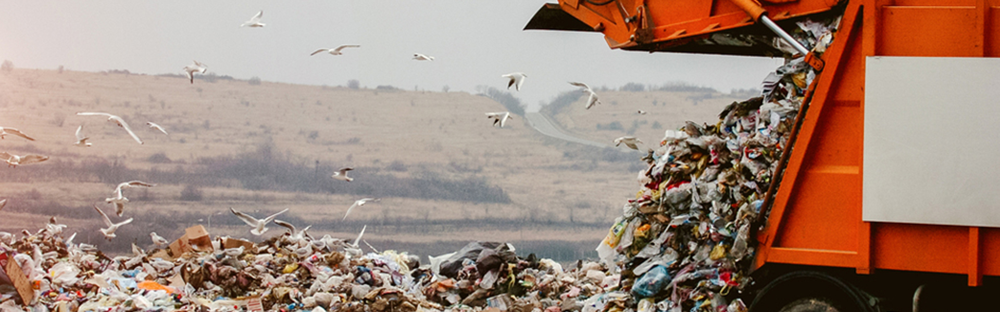

Quando falamos de sustentabilidade, uma das primeiras palavras a aparecerem é a ceciclagem, temos em mente que os recursos so planeta são finitos e escassos, portanto, devemos utilizá-los e distribui-los de maneira eficiente e justa. Uma parcela significativa dos produtos e materiais utilizaods pela humanidade não é totalmente consumida, portanto pode ser reutilizada. A reciclagem pode ser definida como o processo de conversão de desperdício em materiais ou produtos de utilidade, com isso, podemos reduzir o consumo de matérias-primas, reduzir o consumo de energia e reduzir a poluição das industrias do setor primário e secundário.
O crescimento no consumo de bens aliado ao maior número de consumidores faz com que o mundo se torne uma máquina propulsora de geração de resíduos. Sem consciência ambiental, a sociedade é prejudicada pela diminuição da qualidade de vida, passando estes vícios às futuras gerações.
Observamos o papel da reciclagem na sociedade atual como fundamental na preservação do meio ambiente, com ela, podemos reduzir o desperdício, bem como também o acúmulo progressivo de resíduos. Ela nada mais é do que um processo de tranformação aplicado a materiais que podem voltar ao estado original, latas de alumínio, por exemplo, ao serem fundidas, podem voltar ao seu estado anterior, podendo ser transformadas em um novo produto, sem que ocorra a degradação do material.